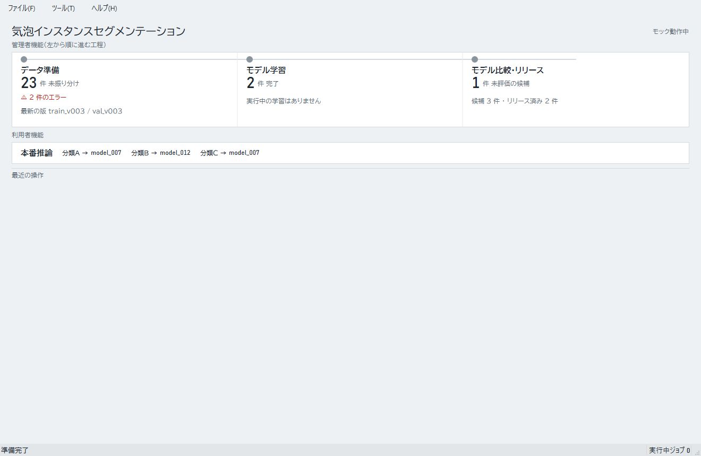

実接続では、学習・評価・リリースと確定済みデータの読込みが実データで動きます。データ準備画面の編集操作と本番推論は模擬処理です。
起動する
- READMEの手順に従ってアプリを起動します。コマンドライン起動は
foam-cell-analysis、画面確認用の全体デモはfoam-cell-analysis --backend mockです。 - 同じ作業フォルダを別のアプリですでに開いている場合は起動できません。先に使用中のアプリを終了してください。
デモ起動では画面全体が模擬データになります。実接続のアプリでは「モック動作中」と表示される場合がありますが、現在の版では接続方式に関係なく表示されます。
ホーム画面
左側には「データ準備」「モデル学習」「モデル比較・リリース」が並びます。管理者は左から順に作業できます。右側には本番推論の入口があり、分類ごとの割り当てモデルを確認できます。「未割り当て」はその分類に使うモデルが決まっていない状態です。
画面下部の最近の操作には、直近の状態や通知が表示されます。


モード画面
データ準備・学習・比較の各画面は、上部のタブでページを切り替えます。画面上部のメニューにはページに応じた操作があり、下部のステータスバーには最近の通知や学習の進み具合が表示されます。
モード画面を閉じるとホームへ戻ります。メニューの「ファイル」から「ホームに戻る」を選ぶ方法もあります。Ctrl+Hでも戻れます。本番推論画面にはファイルメニューがないため、画面を閉じるかCtrl+Hを使います。ホーム画面を閉じるとアプリが終了します。
試用データ
学習を試すときは、管理者が用意した確定済みの学習用版と検証用版を使います。データ準備画面で作った模擬版は、実接続の学習では選べません。ダミーデータの準備方法はREADMEの「学習デバッグ用のダミーデータ」を参照してください。